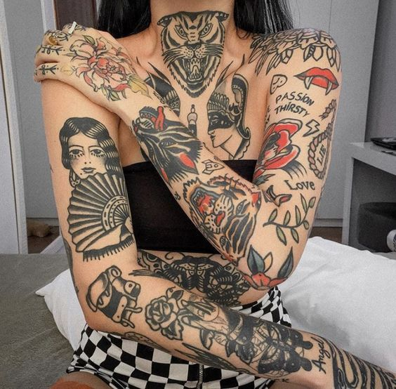
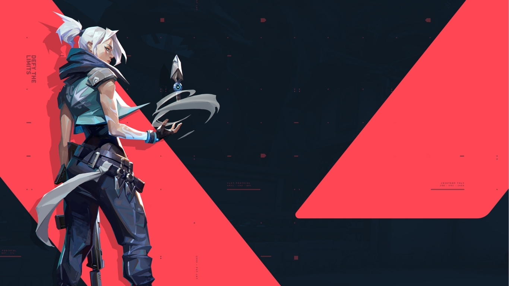

Eu sei que dizer adeus nem sempre é uma tarefa fácil. Em minha caminhada eu sempre busquei o mínimo de despedidas, realmente não levo jeito para isso. Só queria te fazer uma última surpresa, um memorando de como você foi importante para mim e tentar te consolar um pouco para que saiba que esse tempo junto comigo não foi em vão.
Diferenças
Nossas diferenças são tantas que acredito que são uma das grandes responsáveis por esse térimno. No contrário do início, hoje é mais difícil achar semelhanças que diferenças, tanto que listarei algumas principais de cada pessoa.
Déborah
Gustavo
Estilos de fimes

Gostos Pessoais

Estilos Musicais

Jogos
